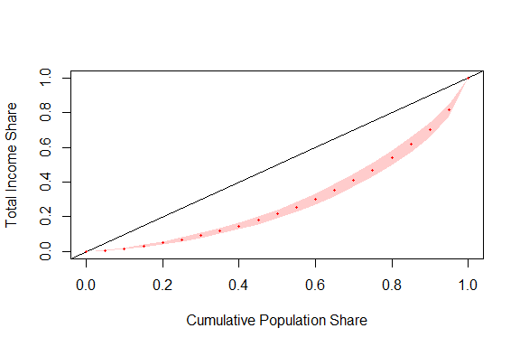
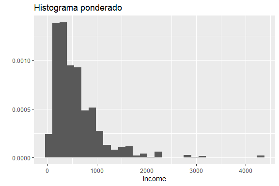
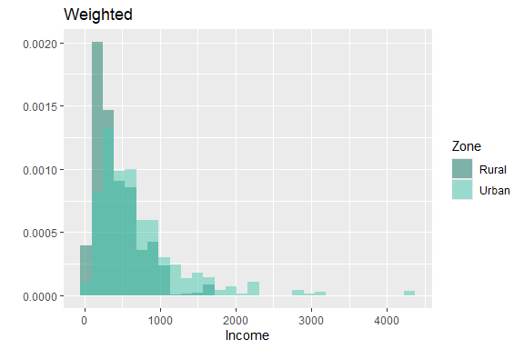
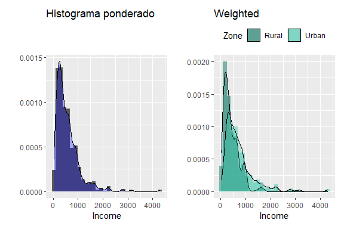
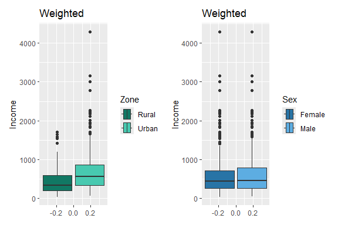
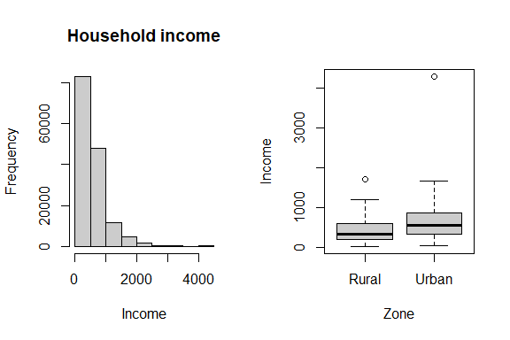
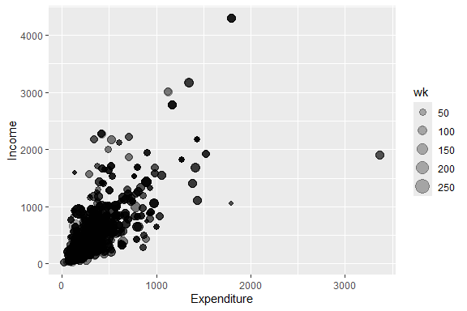
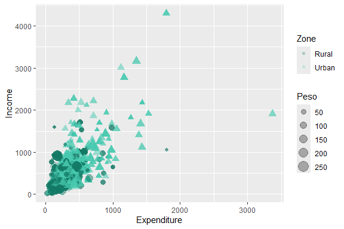

library(tidyverse)
survey_data <- readRDS("../Data/encuesta.rds")3 Análisis de las variables continuas
De acuerdo con Lumley (2010) y Heeringa et al. (2017), el análisis estadístico de encuestas ha evolucionado de manera constante, impulsado por el desarrollo de nuevas metodologías y enfoques que buscan mejorar la precisión y la representatividad de los resultados. En general, estos avances surgen en el ámbito académico y, con el tiempo, son adoptados por instituciones públicas, empresas privadas y organismos estadísticos, que demandan su incorporación en los principales programas de análisis de datos.
Este capítulo presenta los principales procedimientos para el análisis estadístico de variables continuas utilizando R, incorporando adecuadamente las características del diseño muestral, tales como los pesos de expansión, la estratificación y la conglomeración. A lo largo del capítulo se ilustran métodos para estimar parámetros poblacionales, medir su precisión y realizar inferencias válidas a partir de datos provenientes de encuestas complejas. Asimismo, se introducen funciones y herramientas del paquete survey, uno de los recursos más utilizados en R para el análisis de encuestas.
De acuerdo con R Core Team (2026), las bases de datos utilizadas en el análisis de encuestas pueden encontrarse en una amplia variedad de formatos (.xlsx,.dat,.csv,.parquet,.sas7bdat,.sav,.txt, entre otros). Sin embargo una buena práctica consiste en importar la información desde cualquiera de estos formatos y guardarla inmediatamente en un archivo con extensión .rds, que es un formato nativo de R.
Los archivos .rds permiten almacenar cualquier objeto o información en R, como marcos de datos, vectores, matrices o listas. Otro formato propio de R es .RData, el cual permite guardar múltiples objetos en un solo archivo. En contraste, los archivos .rds almacenan únicamente un objeto, lo que hace su uso más controlado y reproducible. Por esta razón, se recomienda trabajar preferentemente con el formato .rds al documentar proyectos o reproducir análisis.
Para ilustrar la sintaxis computacional que se utilizará a lo largo del capítulo, se empleará la misma base del capítulo anterior, que contiene una muestra de 2.605 registros que proviene de un muestreo complejo. A continuación, se muestra cómo cargar un archivo con extensión .rds:
Según Naciones Unidas (2009, sec. 7.8), es fundamental que la estructura del diseño muestral sea tenida en cuenta en el proceso de inferencia al estimar estadísticas oficiales basadas en encuestas de hogares. Como se ha insistido en este documento, ignorar este aspecto puede generar estimaciones sesgadas y errores de muestreo subestimados. En este sentido los programas estadísticos incorporan funcionalidades específicas para manejar datos provenientes de encuestas con diseños complejos.
Una vez cargada la muestra de hogares en R, el siguiente paso es definir el diseño muestral del cual proviene dicha muestra. Para ello se utilizará el paquete srvyr, que surge como un complemento del paquete survey. Estas librerías permiten definir objetos tipo survey.design, a los que se aplican las funciones de estimación y análisis de encuestas, y que pueden ser combinadas con la programación del paquete tidyverse. A continuación, se muestra un ejemplo en el que se define un objeto de tipo survey_design para la encuesta:
options(survey.lonely.psu = "adjust")
library(survey)
library(srvyr)
survey_design <- survey_data %>%
as_survey_design(
strata = Stratum,
ids = PSU,
weights = wk,
nest = TRUE
)Como explica Lumley et al. (2026), la opción options(survey.lonely.psu = "adjust") define cómo el paquete survey debe tratar los estratos que contienen una sola UPM en la muestra. En estos estratos no es posible calcular directamente la variabilidad entre UPM, porque no existe una segunda unidad con la cual realizar la comparación. Con el método "adjust", la contribución de la UPM solitaria a la varianza se calcula centrando su estimación en la media general de las UPM de la muestra, en lugar de utilizar la media del propio estrato. Este ajuste evita que la contribución del estrato sea omitida o quede indefinida y suele producir una estimación conservadora de la varianza. La opción no modifica las estimaciones puntuales, sino únicamente sus varianzas, errores estándar e intervalos de confianza. Su aplicación debe distinguirse del caso de una UPM seleccionada con certeza, cuya contribución a la varianza debe especificarse mediante la información apropiada del diseño.
En la implementación descrita por Freedman Ellis y Schneider (2026), survey_data corresponde a la base de datos que contiene la muestra seleccionada. A partir de estos datos, la función as_survey_design() convierte la información en un objeto de clase tbl_svy, el cual almacena todos los elementos necesarios para describir el diseño muestral de la encuesta. Entre ellos se incluyen la variable de estratificación (strata), que identifica los estratos definidos en el diseño, y la variable especificada en ids, que representa las unidades primarias de muestreo (UPM) o conglomerados seleccionados en la primera etapa del muestreo. Asimismo, el argumento weights define la variable que contiene los factores de expansión asociados a cada observación. Finalmente, la opción nest = TRUE vuelve únicos dentro de cada estrato los identificadores de conglomerado que pudieran repetirse entre estratos.
3.1 Estimación de parámetros descriptivos
Según Särndal et al. (2003) y Heeringa et al. (2017), en las encuestas de hogares es común estimar parámetros descriptivos asociados a variables numéricas, tales como totales, medias, razones y desviaciones estándar. Estas medidas permiten caracterizar distintos fenómenos sociales y económicos de la población, por ejemplo el ingreso, el gasto, las horas trabajadas o el tamaño de los hogares. En esta sección se presentan la lógica detrás de la sintaxis utilizada para este tipo de estimación, junto con sus correspondientes medidas de precisión.
3.1.1 Estimación del total
En R, la función survey_total() se utiliza para estimar totales a partir del objeto de diseño. Esta función incorpora automáticamente los factores de expansión y la estructura del diseño, garantizando que las estimaciones reflejen correctamente el modelo de inferencia.
survey_total(
x,
na.rm = FALSE,
vartype = c("se", "ci", "var", "cv"),
level = 0.95,
deff = FALSE
)Los argumentos principales de la función survey_total() son x, na.rm, vartype, level y deff. El argumento x corresponde a la variable sobre la cual se desea calcular el total; también puede dejarse vacío cuando se busca obtener únicamente el total ponderado de casos de la muestra. Por su parte, na.rm indica si los valores faltantes (NA) deben eliminarse antes de realizar el cálculo, siendo FALSE el valor predeterminado.
El argumento vartype permite especificar el tipo de medida de incertidumbre que se desea estimar, pudiendo solicitarse uno o varios resultados simultáneamente, tales como el error estándar ("se"), el intervalo de confianza ("ci"), la varianza ("var") o el coeficiente de variación ("cv"). Asimismo, level define el nivel de confianza utilizado para el cálculo de los intervalos de confianza, cuyo valor por defecto es 0.95. Por otro lado, el intervalo de confianza puede obtenerse directamente al incluir el argumento vartype = "ci" dentro de survey_total(), o bien utilizando la función confint() sobre el objeto resultante, especificando el nivel de confianza requerido. Finalmente, deff es un valor lógico que indica si se debe retornar el efecto del diseño (DEFF).
El siguiente ejemplo presenta cómo estimar totales y sus intervalos de confianza para diferentes variables de interés en R, utilizando la función survey_total(), cuyos resultados se presentan en la tabla 3.1:
survey_design %>%
summarise(total = survey_total(Income, vartype = c("se", "ci"), deff = TRUE))| total | total_se | total_low | total_upp | total_deff |
|---|---|---|---|---|
| 85793667 | 4778674 | 76331414 | 95255920 | 11 |
De la tabla, se obtiene que la estimación del total poblacional para el ingreso total es de 85.793.667. Este valor corresponde al estimador puntual obtenido a partir de la encuesta, incorporando los factores de expansión y las características del diseño muestral. El error estándar asociado a esta estimación es de 4.778.674, lo que refleja la variabilidad muestral del estimador. A partir de este valor se construye un intervalo de confianza del 95%, cuyos límites inferior y superior son 76.331.414 y 95.255.920, respectivamente. El efecto de diseño (deff), en el sentido desarrollado por Kish (1965), es igual a 11, lo cual sugiere una pérdida importante de precisión asociada principalmente a las características del diseño complejo. En consecuencia, aunque el tamaño muestral nominal pueda ser grande, el tamaño muestral efectivo resultaría considerablemente menor debido al efecto combinado de la ponderación, la estratificación y la conglomeración; este valor no puede atribuirse exclusivamente a la correlación entre observaciones dentro de los conglomerados.
Para continuar ilustrando el uso de la función survey_total() dentro del enfoque de srvyr, estimemos el total de gastos de los hogares, pero ahora calculando el intervalo de confianza al 90%. El siguiente código realiza esta estimación, presentada en la tabla 3.2:
survey_design %>%
summarise(total = survey_total(Expenditure,
vartype = "ci", level = 0.9,
deff = TRUE))| total | total_low | total_upp | total_deff |
|---|---|---|---|
| 55677504 | 51360469 | 59994539 | 10.2 |
Si el objetivo es estimar el total de ingresos de los hogares, pero desagregado por sexo, se puede utilizar la función group_by() para agrupar por la variable de interés, junto con cascade() de la librería srvyr, que permite agregar una fila con el total general al final de la tabla. De esta manera, se pueden obtener fácilmente los totales por categoría y el total global dentro del mismo marco de resumen, como se muestra en la tabla 3.3.
survey_design %>%
group_by(Sex) %>%
cascade(total = survey_total(Income,
vartype = c("se", "ci"),
level = 0.95),
.fill = "Total income")| Sex | total | total_se | total_low | total_upp |
|---|---|---|---|---|
| Female | 44153820 | 2324452 | 39551172 | 48756467 |
| Male | 41639847 | 2870194 | 35956576 | 47323118 |
| Total income | 85793667 | 4778674 | 76331414 | 95255920 |
Como se observa en los códigos anteriores, una forma práctica de obtener las estimaciones del total, su error estándar y su intervalo de confianza es mediante el argumento vartype, especificando las opciones "se" y "ci" respectivamente.
3.1.2 Estimación de la media
Según Gutiérrez (2016), la estimación de la media poblacional ocupa un lugar central en las encuestas de hogares, ya que muchos de los indicadores utilizados para el análisis socioeconómico corresponden a valores promedio, como el ingreso medio del hogar, el gasto per cápita o las horas promedio trabajadas. Este tipo de parámetros permite resumir el comportamiento general de las variables de interés y describir las tendencias centrales de la población objetivo. El estimador de la media poblacional puede expresarse como una razón no lineal entre dos totales poblacionales, los cuales se estiman de la siguiente manera:
\[ \hat{\bar{y}}= \frac{\hat{t}_y}{\hat{N}} = \frac{\sum_{h}\sum_{i}\sum_{k} w_{h i k} \ y_{hik}}{\sum_{h}\sum_{i}\sum_{k} w_{h i k}} \]
De acuerdo con Särndal et al. (2003), dado que \(\hat{\bar{y}}\) no es una estadística lineal, su varianza suele estimarse mediante una aproximación. Por esta razón, es necesario recurrir a métodos de remuestreo o a la linealización de Taylor para aproximar su varianza. En este caso particular, utilizando series de Taylor, la varianza se define como:
\[ \widehat{Var}\left(\hat{\bar{y}}\right) \approx \frac{\widehat{Var}\left(\hat{t}_y\right)+\hat{\bar{y}}^{2}\ \widehat{Var}\left(\hat{N}\right)-2\ \hat{\bar{y}} \ \widehat{Cov}\left(\hat{t}_y,\hat{N}\right)}{\hat{N}^{2}} \]
Como se puede observar, el cálculo de la varianza de la media poblacional implica componentes analíticos complejos, como la covarianza entre el total estimado y el tamaño poblacional estimado. Sin embargo, el paquete srvyr en R facilita estos cálculos al incorporar funciones que estiman directamente la media, su error estándar, el intervalo de confianza y el efecto del diseño. A continuación, se presenta la sintaxis para estimar la media de los ingresos de los hogares, junto con su intervalo de confianza al 95%, cuyos resultados se presentan en la tabla 3.4:
survey_design %>%
summarise(mean = survey_mean(Income,
vartype = c("se", "ci"),
level = 0.95,
deff = TRUE))| mean | mean_se | mean_low | mean_upp | mean_deff |
|---|---|---|---|---|
| 571 | 28.5 | 515 | 627 | 8.82 |
Como se aprecia, los argumentos utilizados en la función survey_mean() son similares a los de survey_total(). En este caso, vartype permite obtener el error estándar ("se") y el intervalo de confianza ("ci"), mientras que el argumento deff = TRUE solicita el cálculo del efecto del diseño. De forma análoga, es posible estimar la media de los gastos de los hogares, empleando la misma estructura de código, presentada en la tabla 3.5:
survey_design %>%
summarise(mean = survey_mean(Expenditure,
vartype = c("se", "ci"),
level = 0.95,
deff = TRUE))| mean | mean_se | mean_low | mean_upp | mean_deff |
|---|---|---|---|---|
| 371 | 13.3 | 344 | 397 | 6.02 |
También se pueden realizar estimaciones de la media por subgrupos siguiendo el mismo esquema mostrado previamente. Particularmente, los gastos de los hogares discriminados por sexo se presentan en la tabla 3.6:
survey_design %>%
group_by(Sex) %>%
cascade(mean = survey_mean(Expenditure,
level = 0.95,
vartype = c("se", "ci")),
.fill = "Mean expenditure") %>%
arrange(desc(Sex))| Sex | mean | mean_se | mean_low | mean_upp |
|---|---|---|---|---|
| Mean expenditure | 371 | 13.3 | 344 | 397 |
| Male | 374 | 16.1 | 343 | 406 |
| Female | 367 | 12.3 | 343 | 391 |
De manera análoga, se pueden calcular las medias del gasto por zona, las cuales son presentadas en la tabla 3.7:
survey_design %>%
group_by(Zone) %>%
cascade(mean = survey_mean(Expenditure,
level = 0.95,
vartype = c("se", "ci")),
.fill = "Mean expenditure") %>%
arrange(desc(Zone))| Zone | mean | mean_se | mean_low | mean_upp |
|---|---|---|---|---|
| Urban | 460 | 22.2 | 416 | 504 |
| Rural | 274 | 10.3 | 254 | 294 |
| Mean expenditure | 371 | 13.3 | 344 | 397 |
Asimismo, es posible realizar una estimación combinada por sexo y zona, presentada en la tabla 3.8:
survey_design %>%
group_by(Zone, Sex) %>%
cascade(mean = survey_mean(Expenditure,
level = 0.95,
vartype = c("se", "ci")),
.fill = "Mean expenditure") %>%
arrange(desc(Zone), desc(Sex))| Zone | Sex | mean | mean_se | mean_low | mean_upp |
|---|---|---|---|---|---|
| Urban | Mean expenditure | 460 | 22.2 | 416 | 504 |
| Urban | Male | 470 | 27.0 | 416 | 523 |
| Urban | Female | 451 | 20.1 | 411 | 491 |
| Rural | Mean expenditure | 274 | 10.3 | 254 | 294 |
| Rural | Male | 275 | 10.2 | 255 | 296 |
| Rural | Female | 273 | 11.6 | 250 | 296 |
| Mean expenditure | Mean expenditure | 371 | 13.3 | 344 | 397 |
3.1.3 Estimación de razones
Según Särndal et al. (2003) y Gutiérrez (2016), un caso particular de funciones no lineales de totales es la razón poblacional, definida como el cociente entre dos totales poblacionales asociados a características de interés. Las razones permiten expresar la relación entre dos variables, lo cual resulta especialmente útil para construir indicadores comparativos y de seguimiento.
De acuerdo con FAO (2026), dado que la razón corresponde al cociente entre dos parámetros poblacionales desconocidos, tanto el numerador como el denominador deben ser estimados a partir de la muestra. Este tipo de parámetro es ampliamente utilizado en encuestas de hogares para construir indicadores relativos, por ejemplo, la cantidad de hombres por cada mujer, la proporción de personas ocupadas respecto a la población en edad de trabajar o la prevalencia de la subalimentación. Con la notación de Bautista (1998), siendo \(Y\) el total de la variable \(y\) y \(X\) el total de la variable \(x\), la razón poblacional se define como \(R = \frac{t_y}{t_x}\) y su estimador puntual en el marco de un muestreo complejo se expresa como:
\[ \hat{R} = \frac{\hat{t}_y}{\hat{t}_x} = \frac{\sum_{h}\sum_{i}\sum_{k} w_{hik} \ y_{hik}} {\sum_{h}\sum_{i}\sum_{k} w_{hik} \ x_{hik}} \]
Sin embargo, dado que \(\hat{R}\) es un cociente entre dos estimadores, es decir, dos variables aleatorias, el cálculo de su varianza no es trivial. Para ello se emplea la linealización de Taylor o bien métodos de remuestreo. En particular, la función survey_ratio() implementa la estimación de razones y sus varianzas en el marco de encuestas complejas.
Un ejemplo directo en encuestas de hogares es la razón entre el gasto y el ingreso, que ayuda a identificar patrones de consumo y niveles de sostenibilidad económica de los hogares. A continuación, se ilustra cómo estimar la razón entre el gasto y el ingreso de los hogares, presentada en la tabla 3.9:
survey_design %>%
summarise(ratio = survey_ratio(numerator = Expenditure,
denominator = Income,
level = 0.95,
vartype = c("se", "ci"))
)| ratio | ratio_se | ratio_low | ratio_upp |
|---|---|---|---|
| 0.649 | 0.023 | 0.603 | 0.695 |
En este caso, se especificaron la variable de gasto como numerador (numerator), la variable de ingreso como denominador (denominator), el nivel de confianza (level) utilizado para la construcción de los intervalos de confianza y las medidas de precisión requeridas mediante el argumento (vartype). Como se puede observar, la razón entre el gasto y el ingreso es, aproximando, 0.65. Esto implica que, por cada 100 unidades monetarias que ingresan al hogar, se gastan aproximadamente 65; el intervalo de confianza al 95% va de 0.60 a 0.69.
Si ahora el objetivo es estimar la razón entre mujeres y hombres en la base de ejemplo, se realiza de la siguiente manera, presentada en la tabla 3.10:
survey_design %>%
summarise(ratio = survey_ratio(numerator = (Sex == "Female"),
denominator = (Sex == "Male"),
level = 0.95,
vartype = c("se", "ci"))
)| ratio | ratio_se | ratio_low | ratio_upp |
|---|---|---|---|
| 1.11 | 0.035 | 1.04 | 1.18 |
Dado que la variable sexo en la base de datos es categórica, fue necesario acudir a variables indicadoras para realizar el cálculo de la razón, utilizando Sex == "Female" para identificar a las mujeres y Sex == "Male" para los hombres. Los resultados muestran que en la población analizada hay una mayor cantidad de mujeres que de hombres, obteniéndose una razón estimada de 1.11. Esto indica que, por cada 100 hombres, existen aproximadamente 111 mujeres. Además, el intervalo de confianza al 95% sugiere que esta razón podría variar entre 1.04 y 1.18. Si se desea hacer la razón de mujeres y hombres pero en la zona rural, se haría de la siguiente manera, presentada en la tabla 3.11:
rural_subset <- survey_design %>%
filter(Zone == "Rural")
rural_subset %>%
summarise(ratio = survey_ratio(numerator = (Sex == "Female"),
denominator = (Sex == "Male"),
level = 0.95,
vartype = c("se", "ci"))
)| ratio | ratio_se | ratio_low | ratio_upp |
|---|---|---|---|
| 1.07 | 0.035 | 0.997 | 1.14 |
Ahora bien, otro análisis de interés es estimar la razón de gastos pero solo en la población femenina. A continuación, se presentan los códigos computacionales, como se muestra en la tabla 3.12.
female_subset <- survey_design %>%
filter(Sex == "Female")
female_subset %>%
summarise(ratio = survey_ratio(numerator = Expenditure,
denominator = Income,
level = 0.95,
vartype = c("se", "ci"))
)| ratio | ratio_se | ratio_low | ratio_upp |
|---|---|---|---|
| 0.658 | 0.02 | 0.619 | 0.698 |
El resultado indica que, por cada 100 unidades monetarias que les ingresan a las mujeres, se gastan 66, con un intervalo de confianza entre 0.62 y 0.70. Por último, análogamente para los hombres, la razón de gastos resulta muy similar a la de las mujeres, como se muestra en la tabla 3.13.
male_subset <- survey_design %>%
filter(Sex == "Male")
male_subset %>%
summarise(ratio = survey_ratio(numerator = Expenditure,
denominator = Income,
level = 0.95,
vartype = c("se", "ci"))
)| ratio | ratio_se | ratio_low | ratio_upp |
|---|---|---|---|
| 0.639 | 0.029 | 0.582 | 0.696 |
3.2 Estimación de parámetros de distribución y desigualdad
3.2.1 Estimación de la dispersión
Según Gutiérrez (2016) y Heeringa et al. (2017), en las encuestas de hogares también es fundamental estimar medidas de dispersión de las variables estudiadas, ya que estas permiten evaluar el grado de heterogeneidad existente en la población. Por ejemplo, conocer qué tan dispersos son los ingresos de los hogares resulta clave para analizar desigualdades económicas y orientar el diseño de políticas públicas. Entre las medidas de dispersión más utilizadas se encuentra la desviación estándar, la cual cuantifica qué tan alejados se encuentran los valores observados respecto a su media. A continuación, se presenta el estimador de este parámetro:
\[ \hat s_y = \sqrt{\frac{n}{n-1}\frac{\sum_{h}\sum_{i}\sum_{k} w_{hik} \ \left(y_{hik}-\hat{\bar{y}}\right)^{2}}{\sum_{h}\sum_{i}\sum_{k} w_{hik}}} \]
Note que esta expresión contiene una corrección por grados de libertad que utiliza el número de observaciones válidas \(n\). Para estimar la desviación estándar de variables numéricas en encuestas de hogares utilizando R, puede estimarse primero la varianza mediante survey_var() y luego obtener su raíz cuadrada. A continuación, se presenta un ejemplo de su uso aplicado a la estimación de la desviación estándar del ingreso, cuyos resultados se muestran en la tabla 3.14.
survey_design %>%
group_by(Zone) %>%
summarise(
Var = survey_var(
Income,
level = 0.95,
vartype = c("se", "ci"),
na.rm = TRUE
)
) %>%
mutate(
Sd = sqrt(Var),
Sd_low = sqrt(Var_low),
Sd_upp = sqrt(Var_upp)
)| Zone | Var | Var_se | Var_low | Var_upp | Sd | Sd_low | Sd_upp |
|---|---|---|---|---|---|---|---|
| Rural | 96274 | 13794 | 68960 | 123588 | 310 | 263 | 352 |
| Urban | 338628 | 81241 | 177763 | 499494 | 582 | 422 | 707 |
Como se observó en el ejemplo anterior, se estimó la desviación estándar de los ingresos por zona, reportando además su correspondiente intervalo de confianza al 95%. Los argumentos de la función survey_var() son equivalentes a los utilizados previamente para la estimación de medias y totales. Si el interés es estimar la desviación estándar de los ingresos desagregando simultáneamente por sexo y zona, los códigos computacionales correspondientes se presentan en la tabla 3.15.
survey_design %>%
group_by(Zone, Sex) %>%
summarise(
Var = survey_var(
Income,
level = 0.95,
vartype = c("se", "ci"),
na.rm = TRUE
)
) %>%
mutate(
Sd = sqrt(Var),
Sd_low = sqrt(Var_low),
Sd_upp = sqrt(Var_upp)
)| Zone | Sex | Var | Var_se | Var_low | Var_upp | Sd | Sd_low | Sd_upp |
|---|---|---|---|---|---|---|---|---|
| Rural | Female | 86947 | 12459 | 62277 | 111618 | 295 | 250 | 334 |
| Rural | Male | 106119 | 15616 | 75197 | 137040 | 326 | 274 | 370 |
| Urban | Female | 323069 | 82058 | 160585 | 485553 | 568 | 401 | 697 |
| Urban | Male | 356141 | 83488 | 190826 | 521456 | 597 | 437 | 722 |
3.2.2 Estimación de percentiles
Según Schulze Waltrup y Kauermann (2016) y Heeringa et al. (2017), las medidas de posición no central, como los percentiles y la mediana, permiten identificar puntos específicos de la distribución de una variable de interés distintos de su valor promedio. En las encuestas de hogares, este tipo de medidas resulta especialmente útil para caracterizar la distribución de variables económicas y sociales, como el ingreso, el gasto o las horas trabajadas. La mediana, por ejemplo, corresponde al valor que divide a la población en dos partes iguales: el 50% de las observaciones se encuentra por debajo de dicho valor y el otro 50% por encima. A diferencia de la media, la mediana es poco sensible a valores extremos, razón por la cual suele considerarse una medida robusta de tendencia central.
De manera similar, los percentiles permiten identificar segmentos específicos de la distribución poblacional. Por ejemplo, los percentiles de ingreso pueden utilizarse para identificar a la población perteneciente al 10% superior de la distribución con fines tributarios, o para focalizar subsidios dirigidos a los hogares ubicados en los percentiles más bajos. La estimación de cuantiles en encuestas complejas se basa en el uso de estimadores ponderados y en la estimación de la función de distribución acumulada (FDA) de la población. Para una población finita de tamaño \(N\), un estimador de esta distribución está dado por:
\[ \hat{F}\left(x\right) = \frac{\sum_{h} \sum_{i} \sum_{k} w_{hik} \ I\left(y_{k}\leq x\right)}{\sum_{h}\sum_{i}\sum_{k} w_{hik}} \]
en donde la función \(I\left(y_{k}\leq x\right)\) es una variable indicadora que toma el valor uno si \(y_k \leq x\) y cero en otro caso.
Una vez estimada la FDA utilizando los pesos del diseño muestral, el cuantil \(q\)-ésimo de una variable \(y\) se define como el menor valor de \(y\) para el cual la FDA es mayor o igual que \(q\). En particular, la mediana corresponde al valor para el cual la FDA alcanza o supera 0.5; por tanto, la mediana estimada es el valor donde la FDA estimada es mayor o igual a 0.5. Para la estimación de cuantiles en encuestas complejas, se ordenan las observaciones en orden ascendente (estadísticas de orden) de forma que \(y_{(1)} \leq y_{(2)} \leq \ldots \leq y_{(n)}\) y se identifica el valor de \(j\) \((j=1,\ldots,n)\) tal que:
\[ \hat{F}\left(y_{(j)}\right)\leq q\leq\hat{F}\left(y_{(j+1)}\right) \]
Bajo esta condición, el estimador del cuantil \(q\)-ésimo se obtiene mediante interpolación lineal, la cual permite obtener estimaciones más estables y precisas de los cuantiles, especialmente cuando la FDA presenta saltos importantes asociados al uso de pesos muestrales. Woodruff (1952) fundamenta el método de inversión de la FDA como base para construir intervalos de confianza de cuantiles. En el caso de la varianza de percentiles y medianas, así como de la construcción de intervalos de confianza, Kovar et al. (1988) muestra que los métodos de replicación presentan buen desempeño para este tipo de parámetros no lineales en diseños complejos.
Tanto los estimadores de cuantiles como los métodos para estimar sus varianzas se encuentran implementados en R. En particular, la función survey_median() permite obtener la mediana junto con su error estándar e intervalo de confianza. A continuación, se presenta la sintaxis para estimar la mediana del gasto de los hogares utilizando la base de datos de ejemplo, cuyos resultados se muestran en la tabla 3.16.
survey_design %>%
summarise(median = survey_median(Expenditure,
level = 0.95,
vartype = c("se", "ci")
)
)| median | median_se | median_low | median_upp |
|---|---|---|---|
| 298 | 8.82 | 282 | 317 |
Como puede observarse, los argumentos de la función survey_median() son equivalentes a los utilizados previamente para estimar totales y medias. Al igual que con otros parámetros poblacionales, la mediana también puede estimarse para distintos dominios de estudio, como zona geográfica, sexo o grupos de edad. La tabla 3.17 muestra los resultados por zona geográfica.
survey_design %>%
group_by(Zone) %>%
summarise(median = survey_median(Expenditure,
level = 0.95,
vartype = c("se", "ci")
)
)| Zone | median | median_se | median_low | median_upp |
|---|---|---|---|---|
| Rural | 241 | 11.0 | 214 | 258 |
| Urban | 381 | 19.8 | 337 | 416 |
Si el objetivo es estimar un percentil específico diferente de la mediana, por ejemplo el percentil 25 (primer cuartil), puede utilizarse la función survey_quantile() de la siguiente manera. Los resultados correspondientes se presentan en la tabla 3.18.
survey_design %>%
summarise(quantile = survey_quantile(Expenditure,
quantiles = 0.25,
level = 0.95,
vartype = c("se", "ci"),
interval_type = "score"
)
)| quantile_q25 | quantile_q25_se | quantile_q25_low | quantile_q25_upp |
|---|---|---|---|
| 200 | 13.8 | 163 | 218 |
En el marco metodológico de Dorfman y Valliant (1993) y en las implementaciones descritas por Freedman Ellis y Schneider (2026) y Lumley et al. (2026), el método basado en una prueba score puede producir resultados menos satisfactorios que otros procedimientos disponibles. El argumento interval_type = "score" no calcula el intervalo de confianza a partir de la función de influencia del percentil; en su lugar, obtiene los límites buscando los valores del parámetro que no serían rechazados por una prueba score robusta. Aquí se utiliza para mantener la coherencia con el código presentado. De manera análoga, la estimación del percentil 25 puede obtenerse para distintos subgrupos de la población, como sexo o zona geográfica, utilizando group_by(), tal como se muestra en la tabla 3.19.
survey_design %>%
group_by(Zone, Sex) %>%
summarise(quantile = survey_quantile(Expenditure,
quantiles = 0.25,
level = 0.95,
vartype = c("se", "ci"),
interval_type = "score"
)
)| Zone | Sex | quantile_q25 | quantile_q25_se | quantile_q25_low | quantile_q25_upp |
|---|---|---|---|---|---|
| Rural | Female | 160 | 7.18 | 135 | 163 |
| Rural | Male | 163 | 3.45 | 150 | 163 |
| Urban | Female | 258 | 10.40 | 249 | 291 |
| Urban | Male | 259 | 10.03 | 257 | 297 |
3.2.3 Estimación del coeficiente de Gini
Como plantean Binder y Kovačević (1995), el tema sobre desigualdad económica trasciende el ámbito estrictamente estadístico y constituye uno de los temas centrales del análisis social contemporáneo. Existe un amplio consenso respecto a la importancia de comprender cómo las desigualdades económicas condicionan las oportunidades, el bienestar y la calidad de vida de las personas. En este sentido, la medición rigurosa de la desigualdad representa un insumo fundamental para el diseño, seguimiento y evaluación de políticas públicas orientadas a la equidad social.
Según Langel y Tillé (2013), entre los indicadores más ampliamente utilizados para cuantificar la desigualdad económica se encuentra el coeficiente de Gini (\(G\)), el cual mide el grado de concentración del ingreso comparando la distribución observada con una situación hipotética de igualdad perfecta. Este coeficiente toma valores entre 0 y 1, donde \(G = 0\) representa igualdad perfecta y \(G = 1\) corresponde al máximo nivel de desigualdad posible. Valores más elevados indican una mayor concentración del ingreso en un grupo reducido de la población.
En el contexto de las encuestas de hogares, la estimación del coeficiente de Gini debe incorporar adecuadamente las características del diseño muestral, incluyendo los factores de expansión, la estratificación y la conglomeración. En muchos casos, los pesos muestrales son previamente normalizados con el fin de simplificar los procedimientos de estimación y facilitar el procesamiento computacional. El estimador del coeficiente de Gini puede expresarse como:
\[ \hat{G} = \frac{2\sum_{h}\sum_{i}\sum_{k}w_{hik}^{*} \ \hat{F}_{hik} \ y_{hik}}{\hat{\bar{y}}}-1 \]
donde \(w_{hik}^{*}=\dfrac{w_{hik}}{\sum_{h}\sum_{i}\sum_{k}w_{hik}}\) corresponde al peso muestral normalizado, \(\hat{F}_{hik}\) representa la función de distribución acumulada (FDA) estimada para la observación \(k\) dentro del conglomerado \(i\) del estrato \(h\), y \(\hat{\bar{y}}\) denota la media ponderada de la variable de ingreso en la población.
De acuerdo con Osier (2009) y Jacob et al. (2024), la literatura especializada profundiza en aspectos técnicos adicionales, especialmente en lo relacionado con la estimación de la varianza del coeficiente de Gini bajo diseños complejos. El paquete convey implementa procedimientos para calcular el coeficiente de Gini y su varianza en encuestas de hogares. Primero, se prepara el diseño muestral mediante convey_prep(). Luego, la función svygini() calcula el índice de Gini utilizando la variable de ingreso y el diseño de encuesta complejo especificado. A continuación se muestra la sintaxis para estimarlo en la base de datos de ejemplo, presentada en la tabla 3.20:
library(convey)
gini_design <- convey_prep(survey_design)
gini <- svygini(~Income, design = gini_design)
data.frame(Gini = coef(gini),
standard_error = SE(gini),
ci_lower = confint(gini)[1],
ci_upper = confint(gini)[2])| Gini | Income | ci_lower | ci_upper | |
|---|---|---|---|---|
| Income | 0.413 | 0.019 | 0.377 | 0.45 |
Como explica Kovacevic y Binder (1997), si el interés se centra en la estimación de la curva de Lorenz, es importante recordar que esta representa la relación entre el porcentaje acumulado de la población (ordenada desde los hogares con menores ingresos hasta aquellos con mayores ingresos) y la proporción acumulada del ingreso total que concentra dicha población. La línea diagonal de 45 grados corresponde a una situación hipotética de igualdad perfecta, en la cual todos los individuos participan proporcionalmente del ingreso total.
El área comprendida entre la curva de Lorenz y la diagonal de igualdad se conoce como el área de Lorenz, y el coeficiente de Gini puede interpretarse como el doble de esta área relativa. En consecuencia, cuanto más cercana se encuentre la curva de Lorenz a la diagonal, mayor será el nivel de equidad en la distribución del ingreso; por el contrario, curvas más alejadas reflejan mayores niveles de desigualdad económica.
Para realizar la curva de Lorenz en R se utiliza la función svylorenz(), presentada en la figura 3.1:
clorenz <- svylorenz(
formula = ~Income,
design = gini_design,
quantiles = seq(0, 1, .05),
alpha = .01,
plot = TRUE
)
El argumento formula = ~Income especifica la variable de ingreso sobre la cual se calculará la distribución acumulada. El argumento design = gini_design indica el objeto de diseño muestral previamente definido, el cual contiene la información relacionada con pesos, estratos y conglomerados de la encuesta. Por su parte, quantiles = seq(0, 1, .05) define los puntos de la distribución en los cuales se evaluará la curva de Lorenz, generando percentiles desde 0 hasta 1 en incrementos de 0.05. Finalmente, el argumento alpha = .01 establece un nivel de significación del 1%, lo que equivale a construir intervalos de confianza del 99% para las estimaciones asociadas a la curva.
3.2.4 Estimación de la correlación
Según Heeringa et al. (2017) y Long (2026), en el estudio de encuestas de hogares, además de describir variables de forma individual, resulta fundamental analizar cómo se relacionan entre sí. Una de las herramientas más utilizadas para este propósito es el coeficiente de correlación de Pearson, el cual mide la fuerza y la dirección de la relación lineal entre dos variables numéricas. Este coeficiente toma valores entre –1 y 1. Un valor positivo indica que ambas variables tienden a aumentar simultáneamente, mientras que un valor negativo señala que cuando una variable aumenta, la otra tiende a disminuir. Por su parte, valores cercanos a cero sugieren la ausencia de una relación lineal fuerte entre las variables analizadas.
Por ejemplo, en una encuesta de hogares puede ser de interés estudiar si existe una asociación entre el ingreso de los hogares y su nivel de gasto, así como evaluar la magnitud de dicha relación. Este tipo de análisis permite comprender mejor los patrones económicos y sociales observados en la población.
De acuerdo con Särndal et al. (2003), en encuestas complejas, es necesario incorporar los pesos muestrales para que la estimación sea representativa de la población, además de las variables de estratificación y conglomeración, que intervienen principalmente en la estimación de la incertidumbre de los estimadores. El cálculo ponderado implica evaluar la covarianza entre las dos variables y dividirla entre el producto de sus desviaciones estándar ponderadas, eliminando así la influencia de las unidades de medida. Asumiendo que \(\hat{\bar{x}}\) es una estimación de la media poblacional de la variable \(x\), entonces el coeficiente de correlación de Pearson ajustado por pesos se expresa como:
\[ \hat{\rho}_{xy} = \frac{\displaystyle \sum_{h} \sum_{i} \sum_{k} w_{hik} (y_{hik} - \hat{\bar{y}})(x_{hik} - \hat{\bar{x}})} {\sqrt{\displaystyle \sum_{h} \sum_{i} \sum_{k} w_{hik} (y_{hik} - \hat{\bar{y}})^2} \sqrt{\displaystyle \sum_{h} \sum_{i} \sum_{k} w_{hik} (x_{hik} - \hat{\bar{x}})^2}} \]
El paquete survey cuenta con la función svyvar() que permite obtener matrices de covarianzas ponderadas, a partir de las cuales se puede calcular la correlación. La tabla 3.21 presenta un ejemplo de estimación para la matriz de varianzas y covarianzas entre el ingreso y el gasto de los hogares.
cov_matrix <- svyvar(~Income + Expenditure, design = survey_design)| Variable | Income | Expenditure | |
|---|---|---|---|
| Income | Income | 243719 | 98337 |
| Expenditure | Expenditure | 98337 | 77887 |
La función svyvar estima la matriz de varianzas y covarianzas considerando el diseño muestral. A partir de dicha matriz puede obtenerse la correlación aplicando las siguientes instrucciones:
cov_xy <- cov_matrix[1, 2]
sd_x <- sqrt(cov_matrix[1, 1])
sd_y <- sqrt(cov_matrix[2, 2])
weighted_cor <- cov_xy / (sd_x * sd_y)
weighted_cor[1] 0.714Si además se desea realizar inferencia estadística sobre la correlación, por ejemplo obtener errores estándar o intervalos de confianza, pueden utilizarse métodos de replicación (bootstrap/jackknife) compatibles con el paquete survey. Otra opción es utilizar la función svycor() del paquete jtools para estimar directamente la correlación:
library(jtools)
svycor(~Income + Expenditure, design = survey_design) Income Expenditure
Income 1.00 0.71
Expenditure 0.71 1.003.3 Pruebas de hipótesis
En el análisis de datos provenientes de encuestas de hogares no basta con estudiar cada variable de manera aislada, como estimar el ingreso medio de hombres y mujeres en un país. También es fundamental comparar grupos y evaluar si las diferencias observadas entre ellos reflejan desigualdades reales en la población o si podrían explicarse simplemente por el error de muestreo. Por ejemplo, una pregunta frecuente consiste en determinar si existen diferencias estadísticamente significativas en el ingreso medio entre hogares dirigidos por hombres y hogares dirigidos por mujeres. Este tipo de análisis permite identificar brechas sociales y económicas, además de generar evidencia útil para el diseño y evaluación de políticas públicas.
Según Heeringa et al. (2017), para responder este tipo de interrogantes se utilizan pruebas de hipótesis, es decir, procedimientos estadísticos que permiten contrastar afirmaciones sobre parámetros poblacionales utilizando la información observada en la muestra. En el contexto de encuestas de hogares, estas pruebas deben incorporar adecuadamente las características del diseño muestral con el fin de garantizar inferencias válidas y resultados confiables.
Las pruebas de hipótesis constituyen una herramienta fundamental para evaluar afirmaciones sobre parámetros poblacionales a partir de la información observada en una muestra. En términos generales, toda prueba de hipótesis se basa en el contraste entre dos proposiciones opuestas: la hipótesis nula, denotada por \(H_0\), y la hipótesis alternativa, denotada por \(H_1\). En el caso más común de una prueba bilateral, estas hipótesis se expresan como:
\[ \begin{cases} H_{0}: & \theta = \theta_0 \\ H_{1}: & \theta \neq \theta_0 \end{cases} \]
donde \(\theta\) representa el parámetro poblacional de interés y \(\theta_0\) un valor de referencia especificado bajo la hipótesis nula. Dependiendo del objetivo del análisis, la hipótesis alternativa también puede formularse de manera unilateral, por ejemplo, cuando se desea evaluar si \(\theta > \theta_0\) o si \(\theta < \theta_0\). El propósito de la prueba es determinar si la evidencia contenida en la muestra resulta suficientemente fuerte para rechazar la hipótesis nula en favor de la hipótesis alternativa.
Supóngase que \(\bar{y}_1\) y \(\bar{y}_2\) representan las medias poblacionales de una variable \(y\) en dos dominios distintos, por ejemplo, el ingreso medio de hogares con jefatura masculina y el ingreso medio de hogares con jefatura femenina. Entonces, el parámetro de interés corresponde a la diferencia:
\[ \Delta = \bar{y}_1 - \bar{y}_2 \]
Su estimador muestral se define como:
\[ \hat{\Delta} = \hat{\bar{y}}_1 - \hat{\bar{y}}_2 \]
Su error estándar se estima mediante la siguiente expresión:
\[ \widehat{se}(\hat{\Delta}) = \sqrt{ \widehat{Var}(\hat{\bar{y}}_1) + \widehat{Var}(\hat{\bar{y}}_2) - 2\widehat{Cov}(\hat{\bar{y}}_1, \hat{\bar{y}}_2) } \]
La presencia del término de covarianza es importante porque las estimaciones de ambos dominios suelen provenir de la misma muestra y, por tanto, no necesariamente son independientes. Una vez calculado el estimador y su error estándar, el contraste de hipótesis se realiza utilizando el siguiente estadístico de prueba:
\[ t = \frac{\hat{\Delta}} {\widehat{se}(\hat{\Delta})} \sim t_{df} \]
Este estadístico sigue aproximadamente una distribución \(t\) de Student con \((df)\) grados de libertad. En la práctica, estos grados de libertad suelen aproximarse mediante \(df = n_I - H\), donde \(n_I\) representa el número de unidades primarias de muestreo y \(H\) el número de estratos. Bajo la hipótesis nula, valores absolutos elevados del estadístico \(t\) constituyen evidencia en contra de \(H_0\). De manera complementaria, también puede construirse un intervalo de confianza para el parámetro \(\Delta\). Para un nivel de confianza de \((1-\alpha)100\%\), dicho intervalo está dado por:
\[ \hat{\Delta} \;\pm\; t_{(1-\alpha/2,df)} \, \hat{se}(\hat{\Delta}). \]
Este intervalo proporciona un rango de valores plausibles para la diferencia poblacional y constituye una herramienta útil para evaluar tanto la magnitud como la significación estadística de las diferencias observadas entre grupos.
En R, estas pruebas pueden implementarse mediante la función svyttest() del paquete survey, la cual incorpora automáticamente los ajustes asociados al diseño muestral. A partir de los resultados presentados en la tabla 3.22 puede concluirse que, con un nivel de confianza del 95%, no existe evidencia estadística suficiente para afirmar que los ingresos medios difieren según el sexo.
ttest_sex <- svyttest(Income ~ Sex, design = survey_design, level = 0.95)| statistic | p_value | gl | ci_lower | ci_upper | estimated_difference |
|---|---|---|---|---|---|
| 1.36 | 0.176 | 118 | -12.8 | 69.4 | 28.3 |
Otra hipótesis de interés consiste en evaluar si los ingresos medios de los hogares difieren según el sexo de la jefatura dentro del área urbana, como se presenta en la tabla 3.23. Los resultados indican que no se rechaza la hipótesis nula \(H_0\), por lo que no existe evidencia estadística suficiente para afirmar que los ingresos medios difieren por sexo en la zona urbana.
urban_subset <- survey_design %>%
filter(Zone == "Urban")
ttest_urban <- svyttest(Income ~ Sex, design = urban_subset, level = 0.95)| statistic | p_value | gl | ci_lower | ci_upper | estimated_difference |
|---|---|---|---|---|---|
| 1.57 | 0.122 | 63 | -12.3 | 102 | 44.7 |
Como plantea Gutiérrez (2016), el procedimiento descrito no se limita a las medias, sino que también puede aplicarse a proporciones, totales, razones o cualquier función diferenciable de totales. En todos los casos, el contraste se fundamenta en la estimación puntual, su varianza (incluyendo covarianzas cuando corresponde) y la comparación con la distribución \(t\) ajustada al diseño muestral.
3.4 Estimación de contrastes
En el análisis de encuestas de hogares es frecuente que el interés no se limite a comparar únicamente dos poblaciones, sino varias de manera simultánea. Por ejemplo, puede ser necesario comparar los ingresos medios de los hogares entre distintas regiones, áreas geográficas o grupos poblacionales, con el propósito de identificar diferencias y establecer patrones de desigualdad entre ellos. En este tipo de situaciones, las pruebas de diferencia de medias presentadas anteriormente resultan limitadas, ya que están diseñadas para comparar únicamente pares de poblaciones.
Según Heeringa et al. (2017), para abordar comparaciones más generales se utilizan los contrastes, que constituyen una herramienta flexible para evaluar combinaciones lineales de parámetros poblacionales. En términos generales, un contraste se define como:
\[ f\left(\theta_1,\theta_2,\ldots,\theta_J\right) = \sum_{j=1}^{J} a_j \theta_j, \]
donde los coeficientes \(a_j\) son constantes conocidas y \(\theta_j\) representan los parámetros de interés. Este enfoque permite formular y evaluar una amplia variedad de comparaciones entre grupos, incluyendo diferencias entre medias, comparaciones múltiples y combinaciones más complejas de parámetros.
Los contrastes permiten comparar combinaciones lineales de parámetros estimados en diseños de muestreo complejos. En R, estos procedimientos se encuentran disponibles mediante la función svycontrast() del paquete survey. Por ejemplo, si se quiere comparar los ingresos medios de dos subpoblaciones particulares (las regiones Norte y Sur) se puede usar el contraste \(\bar{y}_{Norte} - \bar{y}_{Sur}\). Dado que la muestra cubre cinco regiones en total, el contraste debe construirse asignando coeficientes únicamente a las regiones involucradas en la comparación y dejando coeficientes iguales a cero para las demás regiones. De esta manera, el contraste se define como:
\[ 1\times\hat{\bar{y}}_{Norte}+\left(-1\right)\times\hat{\bar{y}}_{Sur}+0\times\hat{\bar{y}}_{Centro}+0\times\hat{\bar{y}}_{Occidente}+0\times\hat{\bar{y}}_{Oriente}. \]
Esta expresión indica que el contraste corresponde a la diferencia entre las medias estimadas de las regiones Norte y Sur, mientras que las demás regiones no participan en la comparación. De forma matricial, el contraste puede escribirse como:
\[ \left[1,\,-1,\,0,\,0,\,0\right] \times \left[\begin{array}{c} \hat{\bar{y}}_{Norte}\\ \hat{\bar{y}}_{Sur}\\ \hat{\bar{y}}_{Centro}\\ \hat{\bar{y}}_{Occidente}\\ \hat{\bar{y}}_{Oriente} \end{array}\right]. \]
En consecuencia, el vector de contraste asociado a esta comparación es \(\left[1,\,-1,\,0,\,0,\,0\right]\), donde los coeficientes positivos y negativos indican las poblaciones que se desean comparar y los ceros representan las poblaciones excluidas del contraste. El primer paso consiste en calcular las medias estimadas para cada región mediante group_by() y survey_mean(), como se presenta en la tabla 3.24. El objeto visible de resultados se construye con srvyr; adicionalmente se crea un objeto auxiliar con matriz de covarianzas para los contrastes posteriores. Como resultado se obtienen las medias estimadas de los ingresos por región.
region_mean <- survey_design %>%
group_by(Region) %>%
summarise(mean = survey_mean(Income,
na.rm = TRUE,
vartype = c("se", "ci")))
region_mean_contrast <- svyby(formula = ~Income,
by = ~Region,
design = survey_design,
FUN = svymean,
na.rm = TRUE,
covmat = TRUE,
vartype = c("se", "ci"))| Region | mean | mean_se | mean_low | mean_upp |
|---|---|---|---|---|
| Norte | 552 | 55.4 | 443 | 662 |
| Sur | 626 | 62.4 | 502 | 749 |
| Centro | 651 | 61.5 | 529 | 772 |
| Occidente | 517 | 46.2 | 425 | 609 |
| Oriente | 542 | 71.7 | 400 | 684 |
La función svycontrast() devuelve el contraste estimado y su error estándar. Los argumentos de esta función son los promedios de los ingresos estimados (stat) y las constantes de contraste (contrasts), como se muestra en la tabla 3.25.
contrast_region_ns <- svycontrast(
stat = region_mean_contrast,
contrasts = list(north_south_difference = c(1, -1, 0, 0, 0))
)| contrast | estimate | variance | standard_error |
|---|---|---|---|
| north_south_difference | -73.4 | 6959 | 83.4 |
Nótese que estos mismos resultados podrían obtenerse realizando explícitamente el proceso de construcción del estimador del contraste y de su varianza estimada. Si se consideran únicamente los ingresos medios estimados de las regiones Norte y Sur, su diferencia es:
# Paso 1: diferencia de las estimaciones (Norte - Sur)
region_income_mean <- setNames(
as.numeric(region_mean_contrast[["Income"]]),
region_mean_contrast[["Region"]]
)
region_income_mean["Norte"] - region_income_mean["Sur"]Norte
-73.4 El paso siguiente es calcular la matriz de varianzas y covarianzas y de allí extraer las varianzas y covarianzas de las regiones Norte y Sur, presentada en la tabla 3.26:
# Paso 2: matriz de varianzas y covarianzas
region_vcov <- vcov(region_mean_contrast)| Region | Norte | Sur | Centro | Occidente | Oriente |
|---|---|---|---|---|---|
| Norte | 3065 | 0 | 0 | 0 | 0 |
| Sur | 0 | 3894 | 0 | 0 | 0 |
| Centro | 0 | 0 | 3778 | 0 | 0 |
| Occidente | 0 | 0 | 0 | 2136 | 0 |
| Oriente | 0 | 0 | 0 | 0 | 5136 |
Para calcular el error estándar de la diferencia (contraste) se usarán las propiedades de la varianza, de la siguiente forma:
\[ \widehat{se}\left(\hat{\bar{y}}_{Norte}-\hat{\bar{y}}_{Sur}\right)=\sqrt{\widehat {Var}\left(\hat{\bar{y}}_{Norte}\right)+ \widehat{Var}\left(\hat{\bar{y}}_{Sur}\right)- 2\, \widehat{Cov}\left(\hat{\bar{y}}_{Norte},\hat{\bar{y}}_{Sur}\right)} \]
Para evitar inconsistencias con valores redondeados, el cálculo se realiza directamente a partir de la matriz estimada:
sqrt(region_vcov["Norte", "Norte"] +
region_vcov["Sur", "Sur"] -
2 * region_vcov["Norte", "Sur"])[1] 83.4Este resultado corresponde al mismo obtenido anteriormente con la función svycontrast(). Además de comparar únicamente dos poblaciones, los contrastes permiten evaluar simultáneamente varias comparaciones de interés entre diferentes grupos.
Por otro lado, supóngase que se desea comparar los ingresos medios entre distintas regiones geográficas. En particular, podrían considerarse contrastes como \(\bar{y}_{Norte} - \bar{y}_{Centro}\), \(\bar{y}_{Sur} - \bar{y}_{Centro}\) y \(\bar{y}_{Occidente} - \bar{y}_{Oriente}\). Cada una de estas expresiones representa un contraste lineal específico entre medias regionales. De manera conjunta, dichos contrastes pueden organizarse mediante la siguiente matriz de contrastes:
\[ \left[\begin{array}{ccccc} 1 & 0 & -1 & 0 & 0\\ 0 & 1 & -1 & 0 & 0\\ 0 & 0 & 0 & 1 & -1 \end{array}\right] \]
En esta matriz, cada fila define un contraste distinto y cada columna corresponde a una de las regiones consideradas en el análisis. Los coeficientes positivos y negativos indican las medias que participan en cada comparación, mientras que los ceros representan las regiones que no intervienen en el contraste correspondiente. A continuación, se muestra la implementación de los contrastes en R, cuyos resultados se presentan en la tabla 3.27. A partir de estos resultados, puede concluirse que las regiones Sur y Centro presentan los ingresos medios de los hogares más similares, dado que la diferencia estimada entre ambas regiones es la menor entre los contrastes evaluados.
contrast_regions <- svycontrast(
stat = region_mean_contrast,
contrasts = list(
north_south = c(1, 0, -1, 0, 0),
south_center = c(0, 1, -1, 0, 0),
west_east = c(0, 0, 0, 1, -1)
)
)| contrast | estimate | variance | standard_error |
|---|---|---|---|
| north_south | -98.4 | 6843 | 82.7 |
| south_center | -25.0 | 7673 | 87.6 |
| west_east | -24.7 | 7272 | 85.3 |
También es posible construir contrastes entre variables asociadas a diferentes grupos poblacionales, como ocurre al comparar el ingreso medio según el sexo. Siguiendo el mismo procedimiento del ejemplo anterior, el primer paso consiste en estimar el ingreso medio para cada grupo, en este caso hombres y mujeres, como se presenta en la tabla 3.28.
sex_mean <- survey_design %>%
group_by(Sex) %>%
summarise(mean = survey_mean(Income,
na.rm = TRUE,
vartype = c("se", "ci")))
sex_mean_contrast <- svyby(formula = ~Income,
by = ~Sex,
design = survey_design,
FUN = svymean,
na.rm = TRUE,
covmat = TRUE,
vartype = c("se", "ci"))| Sex | mean | mean_se | mean_low | mean_upp |
|---|---|---|---|---|
| Female | 558 | 25.8 | 506 | 609 |
| Male | 586 | 34.6 | 517 | 654 |
En este caso, el contraste de interés está dado por \(\bar{y}_{F} - \bar{y}_{M}\), el cual permite cuantificar la diferencia entre el ingreso medio de las mujeres y el correspondiente a los hombres. A continuación, utilizando la función svycontrast() del paquete survey, se obtiene la estimación del contraste, cuyos resultados se presentan en la tabla 3.29. A partir de estos resultados, se concluye que, en promedio, los hombres perciben 28.3 unidades monetarias más que las mujeres, con un error estándar estimado de 20.8 unidades monetarias.
contrast_sex <- svycontrast(
stat = sex_mean_contrast,
contrasts = list(sex_difference = c(1, -1))
)| contrast | estimate | variance | standard_error |
|---|---|---|---|
| sex_difference | -28.3 | 431 | 20.8 |
Dado que los contrastes corresponden a funciones lineales de parámetros, también es posible aplicarlos a estimadores de razón. Un ejemplo de ello consiste en comparar la relación entre ingresos y gastos según el sexo. En este caso, primero se estima la razón ingreso-gasto para cada grupo y posteriormente se construye el contraste entre dichas razones. A continuación, se presentan los códigos computacionales utilizados para realizar este análisis, cuyos resultados se muestran en la tabla 3.30:
sex_ratio <- survey_design %>%
group_by(Sex) %>%
summarise(ratio = survey_ratio(Income,
Expenditure,
na.rm = TRUE,
vartype = c("se", "ci")))
sex_ratio_contrast <- svyby(formula = ~Income,
by = ~Sex,
denominator = ~Expenditure,
design = survey_design,
FUN = svyratio,
na.rm = TRUE,
covmat = TRUE,
vartype = c("se", "ci"))| Sex | ratio | ratio_se | ratio_low | ratio_upp |
|---|---|---|---|---|
| Female | 1.52 | 0.046 | 1.43 | 1.61 |
| Male | 1.56 | 0.070 | 1.42 | 1.70 |
La función svycontrast() no se limita únicamente a la comparación de medias o totales, sino que también permite construir contrastes entre otros parámetros de interés, como razones y proporciones estimadas a partir de diseños de muestreo complejos. A continuación, se presentan los códigos computacionales utilizados para realizar este análisis, cuyos resultados se muestran en la tabla 3.31. A partir de dichos resultados, puede concluirse que la diferencia entre las razones estimadas es de 0.046 a favor de los hombres.
contrast_sex_ratio <- svycontrast(
stat = sex_ratio_contrast,
contrasts = list(sex_difference = c(1, -1))
)| contrast | estimate | standard_error | variance |
|---|---|---|---|
| sex_difference | -0.046 | 0.0416 | 0.00173 |
3.5 Visualización de variables continuas
Según Wilkinson (2005), la representación gráfica de variables continuas es un componente esencial en el análisis de encuestas de hogares. Los gráficos bien diseñados permiten identificar distribuciones, tendencias y relaciones entre variables, facilitando la interpretación de los hallazgos y su comunicación a distintos públicos. Un aspecto fundamental en este contexto es que los gráficos deben incorporar los pesos muestrales para reflejar la distribución de la población de interés.
De acuerdo con Pedersen (2025) y Wickham et al. (2026), en esta sección se utilizan los paquetes patchwork y ggplot2 para la composición y construcción de gráficos. Estas herramientas se combinan con survey y srvyr, respectivamente.
library(ggplot2)
library(patchwork)
data(BigCity, package = "TeachingSampling")3.5.1 Histogramas
Un histograma es una representación gráfica de la distribución de una variable numérica continua, construida a partir de rectángulos cuya altura es proporcional a la frecuencia de observaciones dentro de determinados intervalos de clase. En el contexto de encuestas de hogares, los histogramas ponderados permiten aproximar la distribución de la variable en la población, incorporando los factores de expansión asociados al diseño muestral.
A continuación, se presenta el histograma ponderado de la variable Income, construido incorporando los pesos muestrales (wk) con el fin de representar la distribución estimada del ingreso en la población. Los resultados obtenidos se muestran en la figura 3.2:
weighted_income_hist <- ggplot(
data = survey_data,
aes(x = Income, weight = wk)) +
geom_histogram(aes(y = ..density..)) +
ylab("") +
ggtitle("Histograma ponderado")
weighted_income_hist
En este código, se inicia la construcción del gráfico utilizando la base de datos survey_data. Dentro de aes(), el argumento x = Income indica que la variable representada en el eje horizontal corresponde al ingreso, mientras que weight = wk incorpora los pesos muestrales para construir un histograma ponderado que refleje la distribución estimada en la población. La función geom_histogram() genera el histograma y, mediante aes(y = ..density..), la altura de las barras se expresa en términos de densidad en lugar de frecuencias absolutas. Posteriormente, ylab("") elimina la etiqueta del eje vertical, y ggtitle("Histograma ponderado") agrega un título descriptivo al gráfico.
Los histogramas también permiten comparar visualmente la distribución de una variable entre distintos subgrupos de la población mediante el argumento fill, el cual asigna un color diferente a cada categoría. Por ejemplo, es posible comparar la distribución del ingreso entre zonas urbanas y rurales, como se muestra en la figura 3.3:
zone_colors <- c(Urban = "#48C9B0", Rural = "#117864")
weighted_zone_hist <- ggplot(survey_data, aes(x = Income, weight = wk)) +
geom_histogram(
aes(y = ..density.., fill = Zone),
alpha = 0.5, position = "identity") +
scale_fill_manual(values = zone_colors) +
ylab("") +
ggtitle("Weighted")
weighted_zone_hist
En este código, se construye un histograma ponderado utilizando la base de datos survey_data, donde x = Income define la variable representada en el eje horizontal y weight = wk incorpora los pesos muestrales para reflejar la distribución poblacional del ingreso. La función geom_histogram() genera el histograma y, mediante aes(y = ..density.., fill = Zone), representa las barras en términos de densidad y asigna colores diferentes según la variable Zone, permitiendo comparar visualmente la distribución del ingreso entre zonas. El argumento alpha = 0.5 agrega transparencia a las barras para facilitar la superposición de los histogramas, mientras que position = "identity" permite que las distribuciones se dibujen una encima de otra en lugar de apilarse. Posteriormente, scale_fill_manual(values = zone_colors) define manualmente los colores asociados a cada zona. Finalmente, ylab("") elimina la etiqueta del eje vertical, ggtitle("Weighted") agrega un título al gráfico.
Adicionalmente, es posible superponer curvas de densidad suavizadas mediante la función geom_density(), lo que permite visualizar de manera continua la forma de la distribución de la variable analizada. Este tipo de representación facilita la identificación de patrones como asimetrías, concentración de observaciones o la presencia de múltiples modas. Un ejemplo de este tipo de gráfico se presenta en la figura 3.4:
weighted_income_hist + geom_density(fill = "blue", alpha = 0.3) |
weighted_zone_hist + geom_density(aes(fill = Zone), alpha = 0.3) +
theme(legend.position = "top")
3.5.2 Diagramas de caja (boxplots)
Introducidos por Tukey (1977), los diagramas de caja (boxplots) permiten identificar valores atípicos y evaluar la dispersión de la distribución. Son una representación gráfica que resume una variable mediante estadísticas basadas en cuartiles, permitiendo identificar la mediana, la dispersión de los datos y la presencia de valores atípicos. En el contexto de encuestas de hogares, este tipo de gráfico resulta útil para comparar distribuciones entre distintos grupos poblacionales de manera compacta y visualmente intuitiva.
Para construir boxplots ponderados en ggplot2 se utiliza la función geom_boxplot(), como se muestra en la figura 3.5. En este caso, la función ggplot() inicia la construcción del gráfico utilizando la base de datos survey_data, donde x = Income define la variable numérica analizada y weight = wk incorpora los pesos muestrales para representar la distribución estimada en la población. Posteriormente, geom_boxplot() genera los diagramas de caja y, mediante aes(fill = Zone) o aes(fill = Sex), asigna colores diferentes a cada categoría de las variables Zone y Sex, respectivamente, facilitando la comparación visual entre grupos. La función coord_flip() invierte los ejes para presentar los boxplots de forma horizontal, mejorando así su legibilidad. Por su parte, scale_fill_manual() permite definir manualmente los colores asociados a cada categoría mediante los vectores zone_colors y sex_colors.
weighted_zone_boxplot <- ggplot(survey_data, aes(x = Income, weight = wk)) +
geom_boxplot(aes(fill = Zone)) +
ggtitle("Weighted") +
coord_flip() +
scale_fill_manual(values = zone_colors)
sex_colors <- c(Male = "#5DADE2", Female = "#2874A6")
weighted_sex_boxplot <- ggplot(survey_data, aes(x = Income, weight = wk)) +
geom_boxplot(aes(fill = Sex)) +
ggtitle("Weighted") +
coord_flip() +
scale_fill_manual(values = sex_colors)
weighted_zone_boxplot | weighted_sex_boxplot
Además de las herramientas disponibles en ggplot2, las funciones especializadas svyhist() y svyboxplot() del paquete survey incorporan directamente las características del diseño muestral complejo en la construcción de los gráficos. Estas funciones permiten obtener representaciones gráficas coherentes con el diseño de la encuesta, facilitando el análisis exploratorio de las variables numéricas. Un ejemplo de su aplicación se presenta en la figura 3.6.
old_par <- par(no.readonly = TRUE)
par(mfrow = c(1, 2))
svyhist(~Income, survey_design,
main = "Household income",
col = "grey80", xlab = "Income",
probability = FALSE)
svyboxplot(Income ~ Zone, survey_design,
col = "grey80",
ylab = "Income", xlab = "Zone")
par(old_par)
3.5.3 Diagramas de dispersión
Los diagramas de dispersión permiten explorar visualmente la relación entre dos variables continuas, facilitando la identificación de patrones de asociación, tendencias y posibles valores atípicos. En el contexto de encuestas con diseños muestrales complejos, resulta importante incorporar la información de los pesos de muestreo para que la representación gráfica refleje adecuadamente la contribución relativa de cada observación en la población.
Cuando se trabaja con conjuntos de datos de gran tamaño, representar todos los puntos simultáneamente puede generar gráficos difíciles de interpretar debido a la sobreposición de observaciones. Sin embargo, en muestras de tamaño moderado, una estrategia sencilla y efectiva consiste en representar los pesos mediante el tamaño de los símbolos en el gráfico de dispersión. De esta manera, las observaciones con mayor peso poblacional aparecen resaltadas visualmente. Un ejemplo de este tipo de representación se presenta en la figura 3.7:
weighted_basic_scatter <- ggplot(
data = survey_data,
aes(y = Income, x = Expenditure)) +
geom_point(aes(size = wk), alpha = 0.3)
weighted_basic_scatter
En este código, se construye un diagrama de dispersión entre las variables x = Expenditure y y = Income. La función geom_point() agrega los puntos del gráfico y, mediante aes(size = wk), utiliza los pesos muestrales (wk) para controlar el tamaño de cada punto, de modo que las observaciones con mayor representación poblacional aparezcan visualmente más destacadas. El argumento alpha = 0.3 incorpora transparencia a los puntos, reduciendo el problema de sobreposición y facilitando la visualización de áreas con alta concentración de observaciones.
Adicionalmente, es posible incorporar variables de agrupamiento en los diagramas de dispersión mediante los argumentos shape y color, los cuales permiten diferenciar visualmente las observaciones según categorías específicas de la población. Esto facilita la identificación de patrones diferenciados entre grupos y mejora la interpretación de la relación entre las variables analizadas. Un ejemplo de este tipo de representación se presenta en la figura 3.8.
weighted_zone_scatter <- ggplot(
data = survey_data,
aes(y = Income, x = Expenditure, shape = Zone)) +
geom_point(aes(size = wk, color = Zone), alpha = 0.3) +
labs(size = "Peso") +
scale_color_manual(values = zone_colors)
weighted_zone_scatter